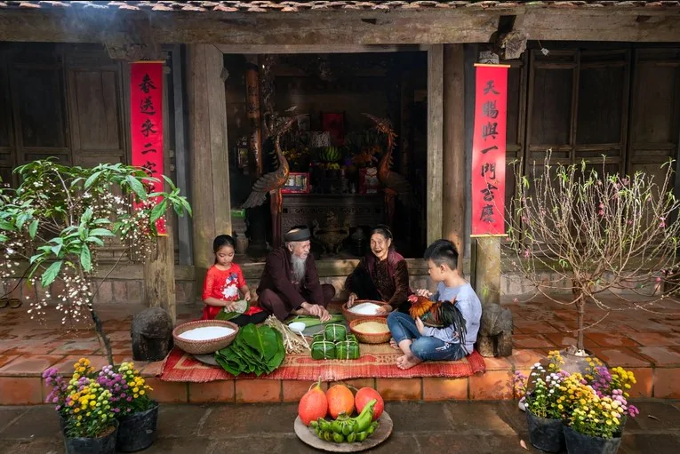
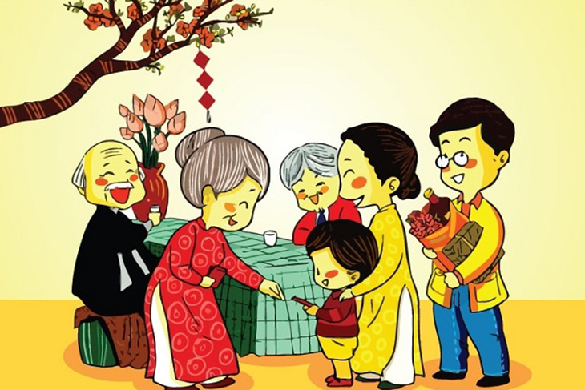
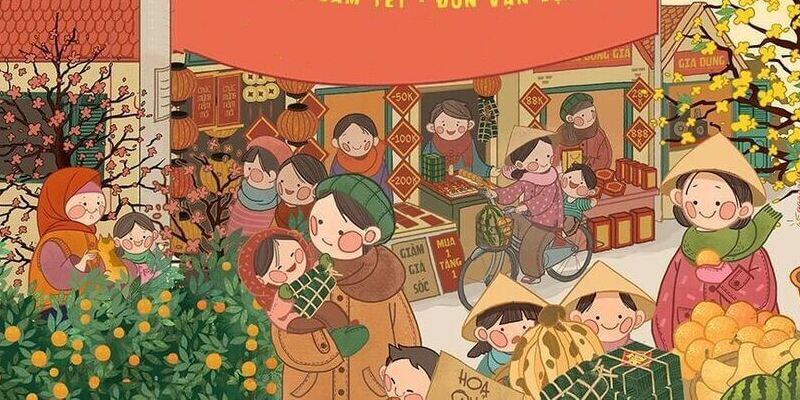

Tết Nguyên Đán (còn gọi là Tết Cả, Tết ta, Tết Âm lịch, Tết Cổ truyền hay đơn giản là Tết) là dịp lễ đầu năm Âm lịch quan trọng và có ý nghĩa nhất ở Việt Nam. “Tết” là cách đọc âm Hán - Việt của chữ “tiết”, “nguyên” theo chữ Hán có nghĩa là sự khởi đầu hay sơ khai và “đán” là buổi sáng sớm, cho nên đọc đúng phiên âm phải là “Tiết Nguyên Đán”.
Tết Nguyên Đán của Việt Nam được tính theo Âm lịch, muộn hơn Tết Dương lịch (hay Tết Tây). Do quy luật 3 năm nhuận một tháng của Âm lịch nên ngày đầu năm của dịp Tết Nguyên Đán không bao giờ trước ngày 21/01 Dương lịch và sau ngày 19/02 Dương lịch mà thường chỉ rơi vào khoảng giữa những ngày này. Thời gian diễn ra Tết Nguyên Đán hàng năm thường kéo dài trong khoảng 7 - 8 ngày cuối năm cũ và 7 ngày đầu năm mới (23 tháng Chạp đến hết ngày 7 tháng Giêng).
Tết Nguyên Đán có nguồn gốc như thế nào đến nay vẫn còn là vấn đề đang được tranh cãi. Hầu hết thông tin đều cho rằng ngày Tết Nguyên Đán có nguồn gốc từ Trung Quốc và được du nhập về Việt Nam trong 1000 năm Bắc thuộc. Nhưng theo sự tích "Bánh chưng bánh dày" thì người Việt đã ăn Tết từ thời vua Hùng, tức là trước cả khoảng thời gian 1000 năm Bắc thuộc.
Với người Việt Nam, Tết Nguyên Đán không chỉ là khoảng thời gian chuyển giao giữa năm cũ và năm mới Âm lịch mà nó còn chứa đựng nhiều ý nghĩa tâm linh, văn hóa,... Theo quan niệm phương Đông, đây là khoảng thời gian trời đất có sự giao hòa và con người trở nên gần với thần linh. Tết Nguyên Đán xưa là dịp để người nông dân bày tỏ lòng thành kính đến các vị thần linh như thần Đất, thần Mưa, thần Sấm, thần Nước, thần Mặt trời,... và cầu cho một năm mưa thuận gió hòa, mùa màng bội thu.
Bên cạnh đó, đây còn được coi là ngày “làm mới”, ngày để mọi người có thể hy vọng vào một năm mới an lành, sung túc, thuận lợi trong cả năm và gác lại mọi điều không may mắn trong năm cũ. Do vậy, vào dịp Tết, nhà nào cũng tất bật dọn dẹp, sắm sửa, trang hoàng nhà cửa cho thật đẹp. Đây cũng là dịp mọi người làm mới lại về phần tình cảm và tinh thần để mối liên hệ với người thân được gắn bó hơn, tinh thần thoải mái, tươi vui hơn. Trong dịp Tết, các gia đình thường tụ họp chúc Tết nhau, cùng nhau thắp nén hương tưởng nhớ ông bà, tổ tiên, tạ ơn ông bà, tổ tiên đã phù hộ trong suốt một năm qua.
Hy vọng qua bài viết trên, bạn đã hiểu thêm về ngày Tết Nguyên Đán của dân tộc. Chúc các bạn có một năm mới an khang, thịnh vượng nhé!